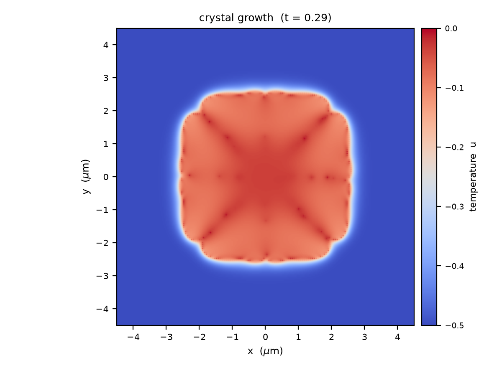
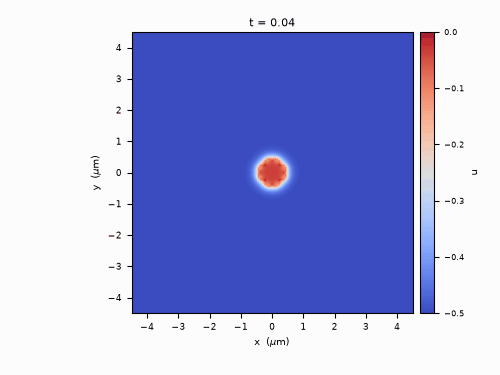
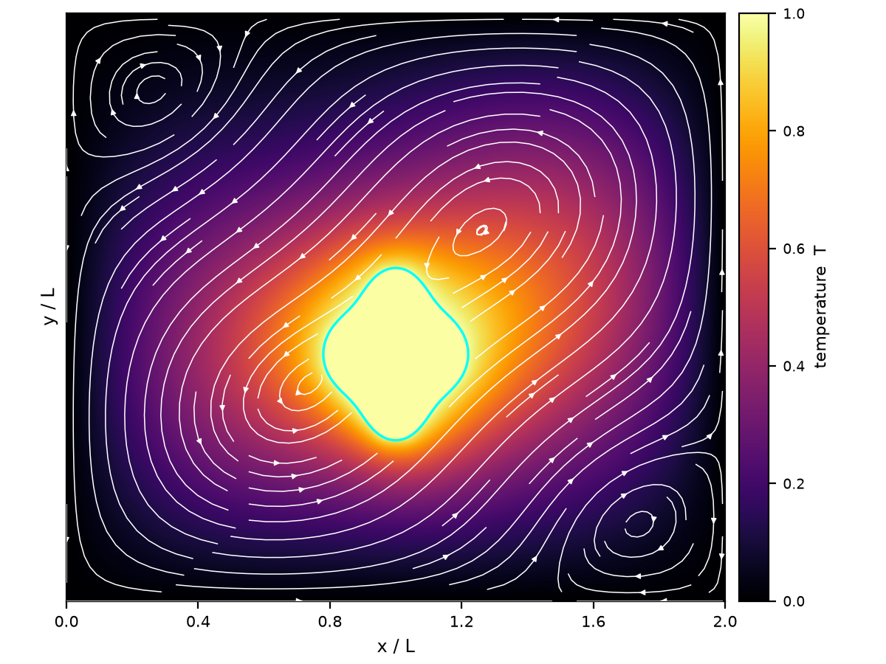
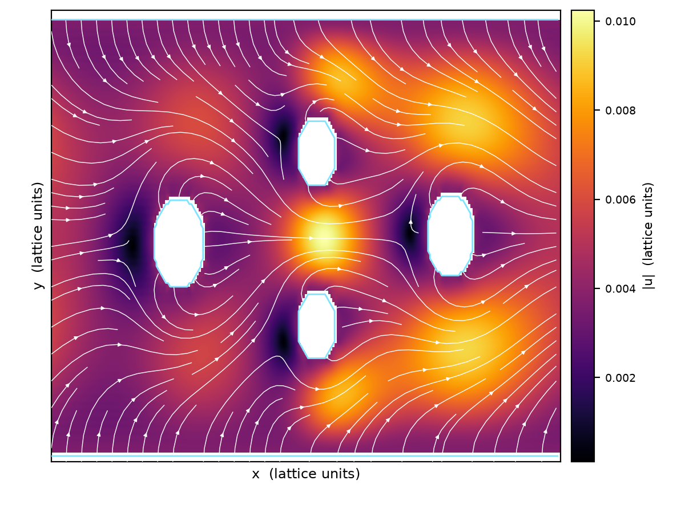
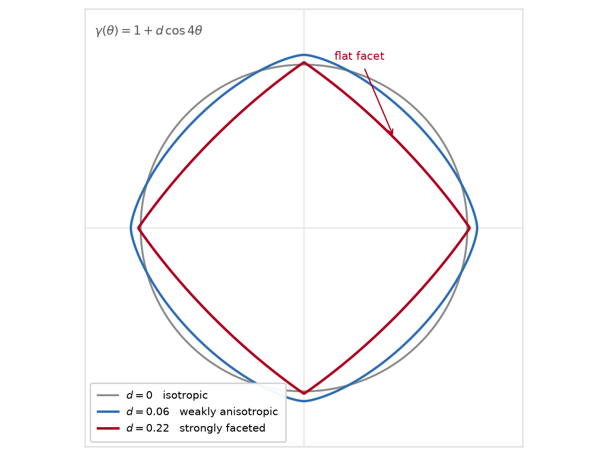
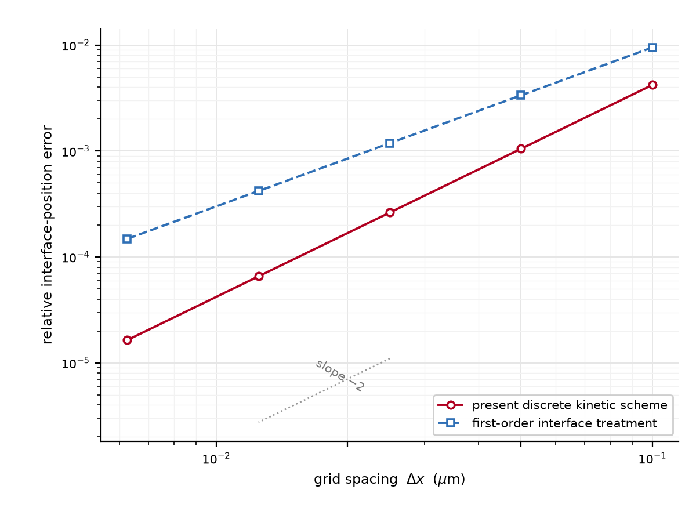

Ph.D. Candidate in Mechanical Engineering, Southeast University, China
Computational researcher developing kinetic and diffuse-interface methods for multiscale transport, gas-solid interactions, and solidification. Expertise spans DUGKS/LBM, phase-field modeling, matched asymptotic and multiscale analysis, AMReX-based adaptive mesh refinement, and GPU-accelerated scientific computing.






Email: chujinqin@seu.edu.cn